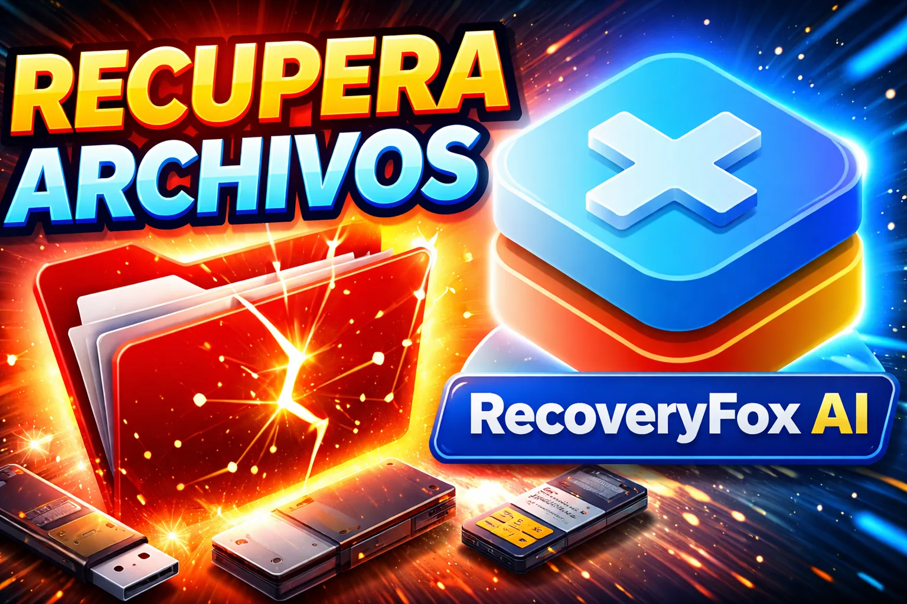

Tutorial Erick Islas Tech
¿BORRASTE tus archivos?
Recupéralos fácilmente en 2026 (SSD, USB y Disco Duro)

Guía de apoyo
En este video te muestro paso a paso cómo recuperar archivos eliminados de tu computadora, disco duro, SSD o memoria USB de forma fácil y sin gastar miles de pesos en servicios profesionales.
IMPORTANTE:
- Mientras más rápido actúes después de perder tus archivos, mayores serán las probabilidades de recuperación.